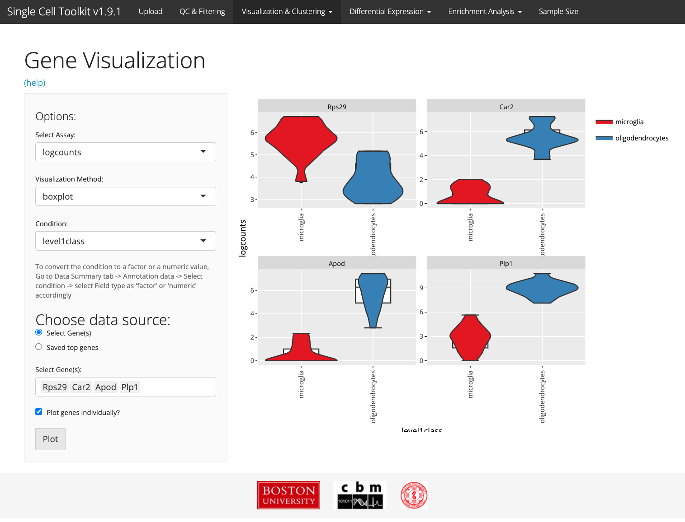
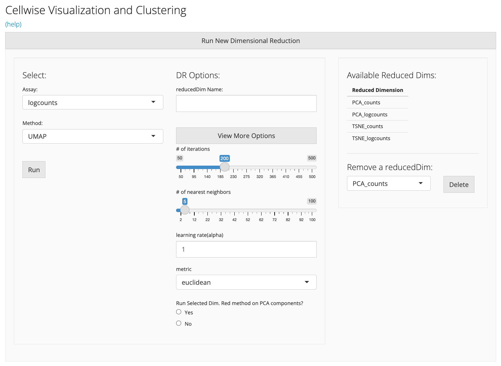
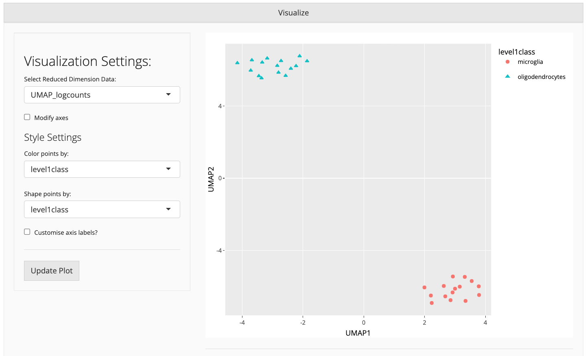
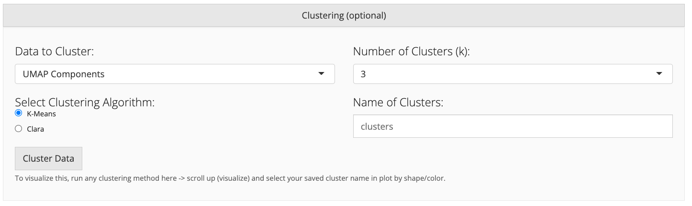

vignettes/v05-tab03_Visualization-and-Clustering.Rmd
v05-tab03_Visualization-and-Clustering.RmdVisualization of scRNA-Seq data is crucial for identifying cell identifies as well as learning functional subclusters of cells present in the data. The visualization and clustering tab can be used to visualize scRNA-Seq data at the gene and sample level, and to reduce dimensions and cluster data for downstream analysis. The tab has 3 subtabs, Gene visualization, cell-wise visualization and clustering, and Celda. In some cases the values for these tabs can be precomputed, and the results will be stored inside the object. For this tab, especially for the cell-wise visualization, analysis results can be stored in the reducedDim slot of the SingleCellExperiment object. For example large datasets, PCA and t-SNE can take a long time, so pre-computing this data is recommended. If you wish to re-run PCA or t-SNE, you can click the “Re-run” button and the data will be replaced.
The Gene-wise Visualization subtab helps users to visualize gene expression data versus annotation data for one or multiple genes of interest using either a boxplot, scatterplot, barplot, or heatmap. The types of plots available depends on the nature of the annotation variable of interest (e.g. factor data, numeric values, etc.). This can be helpful for visualizing individual genes of interest, including cell-identifying marker genes, or for displaying housekeeping genes for sample quality control or for quantifying housekeeping genes or artificial spike-in controls for sequencing quality control.

The Cellwise Visualization and Clustering subtab includes dimensionality reduction and clustering techniques to allow users to visualize their scRNA-Seq in lower dimensional space. For example, the SCTK uses principal component analysis (PCA) to transform the expression matrix into orthogonal, linear dimensions that increasing describe the variation observed in the data. Furthermore, the SCTK can use popular non-linear dimension reduction methods such t-SNE and UMAP. We note that by default, the t-SNE and UMAP functions operate on a subset of the PCA-reduced data but can be applied on the raw data if desired.
The Cell-wise Visualization and Clustering subtab in the SCTK provides a list of available (pre-computed) reduced dimension datasets available in the SingleCellExperiment object (if any are available). The user can select an assay matrix (e.g. counts, log-counts, counts per million, etc), and interactively apply one of the dimension reduction algorithms on the dataset (e.g. PCA, t-SNE, UMAP). For smaller datasets, users can perform PCA, t-SNE, and UMAP directly through the SCTK Shiny app. The resulting reduced data matrices will be stored in the underlying object for future use and downstream visualization, and will be available when the data object is downloaded (or re-uploaded). Because some of these algorithms can take a long time to compute on large datasets (e.g. t-SNE on >5,000 cells), users can precompute these reduced dimension data from the console, on the cluster, or in a preprocessing workflow, and store the reduced dimension results in the SingleCellExperiment object before uploading the object into the SCTK user interface.

The resulting reduced dimension data can be efficiently displayed in the visualization box. Annotation information can be added to the plot by selecting annotations with which to color or shape the points in the scatterplot.

After visualization of the data, users may want to stratify the scRNA-Seq data into clusters that appear during dimensionality reduction. Users can choose to cluster their data using k-means clustering, hierarchical clustering, or CLARA (Clustering for Large Applications). After the clustering algorithm is complete, the visualization plot can be updated to to display the resulting clusters. The cluster results, the cluster assignments are stored in the annotation data frame (colData) of the SingleCellExperiment object. The clusters can then be used to filter the data for downstream visualization (e.g. differential expression within one or more clusters/cell types).

## R version 4.1.2 (2021-11-01)
## Platform: x86_64-apple-darwin17.0 (64-bit)
## Running under: macOS Big Sur 10.16
##
## Matrix products: default
## BLAS: /Library/Frameworks/R.framework/Versions/4.1/Resources/lib/libRblas.0.dylib
## LAPACK: /Library/Frameworks/R.framework/Versions/4.1/Resources/lib/libRlapack.dylib
##
## locale:
## [1] en_US.UTF-8/en_US.UTF-8/en_US.UTF-8/C/en_US.UTF-8/en_US.UTF-8
##
## attached base packages:
## [1] stats graphics grDevices utils datasets methods base
##
## other attached packages:
## [1] BiocStyle_2.22.0
##
## loaded via a namespace (and not attached):
## [1] rstudioapi_0.13 knitr_1.38 magrittr_2.0.3
## [4] R6_2.5.1 ragg_1.2.2 rlang_1.0.2
## [7] fastmap_1.1.0 stringr_1.4.0 tools_4.1.2
## [10] xfun_0.30 cli_3.2.0 jquerylib_0.1.4
## [13] systemfonts_1.0.4 htmltools_0.5.2 yaml_2.3.5
## [16] digest_0.6.29 rprojroot_2.0.3 pkgdown_2.0.2
## [19] bookdown_0.25 textshaping_0.3.6 BiocManager_1.30.16
## [22] purrr_0.3.4 sass_0.4.1 fs_1.5.2
## [25] memoise_2.0.1 cachem_1.0.6 evaluate_0.15
## [28] rmarkdown_2.14 stringi_1.7.6 compiler_4.1.2
## [31] bslib_0.3.1 desc_1.4.1 jsonlite_1.8.0